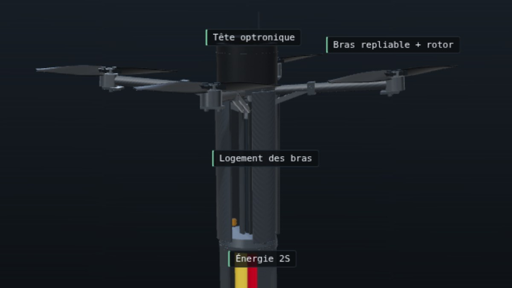

Micro-drone à bras repliables de calibre 40 mm — étude mécanique

Visualiseur temps réel d'un quadrirotor à bras repliables logé dans une enveloppe de calibre 40 mm. Le modèle est entièrement procédural : aucun .glb, aucune texture, aucune police distante — toute la géométrie est générée au chargement à partir d'un seul fichier de cotes.
Le déploiement se rejoue phase par phase — tube, tir, sortie, vol — avec un curseur de progression. Le mécanisme est du type parapluie : un coulisseau et quatre bielles ouvrent les quatre bras à 94° sur une course de 56 mm, puis un verrou fige la position.
C'est un outil d'étude mécanique et cinématique : architecture, encombrement, séquence de dépliage, implantation des sous-ensembles. Le module avant est modélisé comme une enveloppe de charge utile générique et inerte ; le dépôt ne représente aucun contenu énergétique.
La page publiée est un fichier unique de 552 ko, three.js compris : aucune dépendance, aucun serveur, elle s'ouvre même en double-clic.
Fiche techniqueOA35 — l'autre visualiseur de build
Capture du visualiseur du dépôt, drone déployé en configuration de vol.
© STRATOS ROBOTICS | Design by STRATOS